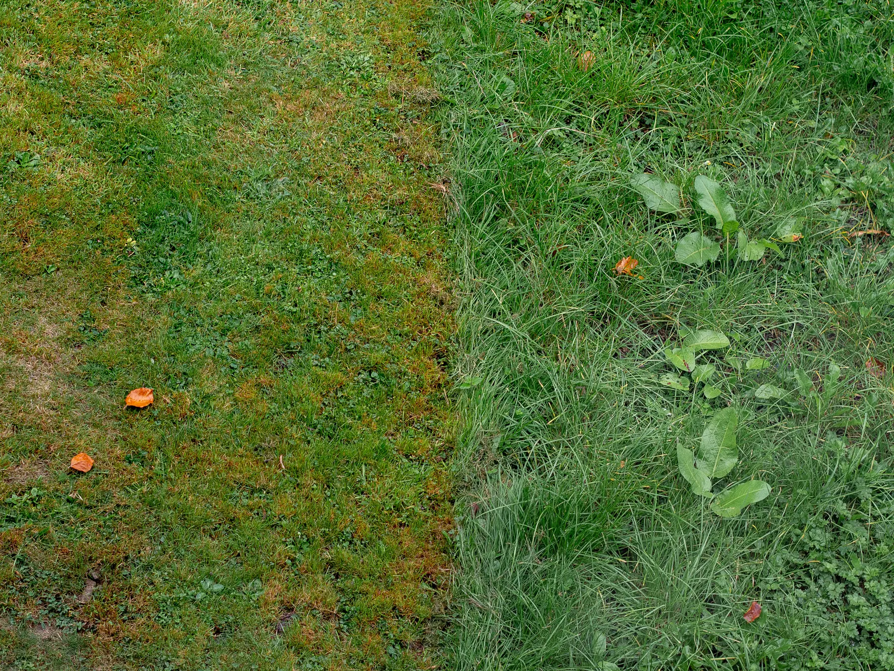
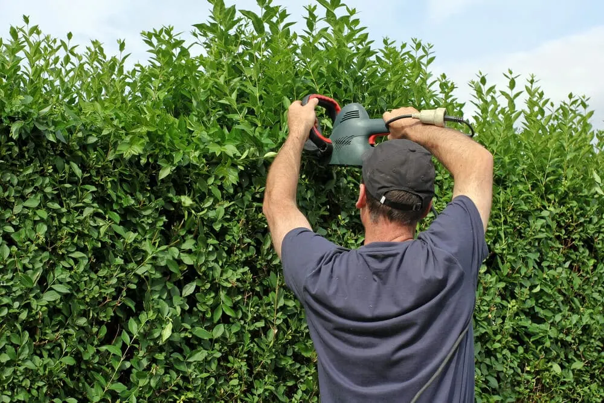

A Free Yard Walk-Through
Every Madisonville job starts with a free consultation and a no-obligation quote written after we have seen the property.

At Big Easy Lawn Care, we provide lawn service for homes and businesses in Madisonville, from mowing and trimming to mulching, cleanups, and landscaping. This small town on the Tchefuncte River sits on Louisiana soil that tends to run acidic, so we check the shade, soil, and drainage of each yard before we quote.
A Madisonville lawn care visit covers the work agreed after a free consultation, carried out by a fully insured lawn professional and backed by our satisfaction guarantee. It can be a single mowing and weed-eating visit or part of an ongoing program, for a house or a commercial lot, with billing handled online.
Every Madisonville job starts with a free consultation and a no-obligation quote written after we have seen the property.
A fully insured lawn professional is assigned to your yard and sees the visit through from the first pass to the final sweep.
Book a one-time mowing and weed-eating visit, or set up a maintenance program with regular cuts and seasonal cleanups.
We work on residential yards and commercial properties alike, with the plan matched to the size and use of the site.
Check your service, pay, and reserve another visit from a phone or web browser, without waiting on a callback.
When something is missed, let us know and we will come back to put it right under our satisfaction guarantee.
Madisonville homeowners hire a yard service when shade, moss, and wet ground start winning against the grass, or when the mowing simply no longer fits the week. Many also want help before guests arrive, before a sale, or after leaves and limbs pile up across the lawn and beds.
In Madisonville we offer three groups of lawn and landscape services. Lawn and yard maintenance covers mowing, trimming, mulching, weed cutting, pressure washing, and hauling; landscaping covers new builds and restoration; and outdoor living covers pergolas and decks. Any of them can start with a free estimate at your property.

Steady upkeep for Madisonville lawns that grow fast in summer and collect leaves in the cooler months.

Beds, plantings, and repairs for yards where shade or water has changed what will grow.
Explore Landscaping
Decks and covered spots that make a wooded backyard a place to sit, not just a place to mow.
Explore Outdoor LivingA Madisonville lawn needs professional care when moss is replacing grass in the shade, when circular patches turn yellow or reddish in spring or fall, or when water still stands a day after rain. Each one points to a site problem that mowing alone will not fix, so it is worth catching early.
LSU AgCenter links ground moss to dense shade, acidic or infertile soil, poor drainage, and compaction. Killing the moss without changing those conditions only clears the way for it to return.
Large patch shows up in Louisiana lawns in spring and fall. LSU AgCenter notes a yellowish edge on St. Augustine and a reddish one on centipede, with leaves that pull away easily.
Ground that stays wet invites moss and disease and leaves ruts behind the mower. Finding where the water collects is the first step toward fixing it.
Lawn care in Madisonville is shaped by its setting: a compact, old town on the Tchefuncte River, built on Louisiana soil that tends to run acidic. That soil suits grasses that like a lower pH, but add shade or slow drainage and moss and thin turf follow, so each yard needs its own plan.

A local lawn care company is worth it in Madisonville because the people quoting and caring for your yard know Louisiana grasses, soil, and weather firsthand. With us you get a locally owned business, a quote from an actual site visit, insured work under a guarantee, and online scheduling and payment.
We are locally owned, with our office at 3436 Magazine Street in New Orleans.
Your quote reflects the yard we walked, including its shade and wet spots.
Fully insured lawn professionals, with a satisfaction guarantee behind every visit.
Change visits, add services, and pay online whenever your plans shift.
When you book lawn service in Madisonville, we first visit for a free consultation and send a no-obligation quote. Once you approve it, a fully insured lawn professional does the agreed work. After that, you manage visits, payments, and extra services online, adding a visit whenever weather or leaf drop calls for one.
We note the grass type, the shade, any wet ground, and the beds, then price the work in writing.
Your lawn professional mows, trims, and clears as agreed, then blows off the hard surfaces.
As seasons change, adjust the schedule or add mulching and cleanups from your account.

Before booking yard work in Madisonville, know where the shade falls across the day, which spots hold water after rain, and how often you want the lawn cut. With those three answers, we can quote the right mix of mowing, mulching, and repairs instead of guessing on the first visit.
Grass that sits in shade most of the day may do better as a planted or mulched bed, which changes the scope of the job.
Point out low areas so we can plan around them, or talk through drainage work and landscape restoration.
We generally recommend weekly or bi-weekly service in peak growing season, though a one-time visit is always an option.
Near Madisonville, our lawn services include mulching, weed cutting, cleanup and hauling, and landscape restoration, and we cover the neighboring Northshore towns of Covington, Mandeville, and Abita Springs. Across the lake, we also serve New Orleans, Metairie, Kenner, Harahan, River Ridge, and Gretna with the same services.
Madisonville grew up on the Tchefuncte River in St. Tammany Parish and took its name from President James Madison. Today it is a small town run by a mayor and town council.
Most days out in Madisonville lead back to the river. A state park, three museums, and a historic lighthouse station sit within easy reach of the water.
Covington, Mandeville, and Abita Springs are Madisonville's Northshore neighbors in our service area. Across the lake, we also look after lawns in New Orleans and five nearby south shore cities.
The first French settlers called the place Coquille, after the shells found along the river and lake. Boats have defined the town ever since.
Public transit in St. Tammany Parish is STAR Transit, a demand-response service run by the parish rather than a fixed bus network. Riders call ahead to book curb-to-curb trips.
Madisonville homeowners mostly ask about the problems that shade, acidic soil, and wet ground create: how to clear moss, how to spot large patch, what lime does, which grass suits acidic soil, how centipede grass should look and thicken, what to put where grass will not grow, and how to dry out a soggy yard.
Change the conditions that let moss win, not just the moss itself. LSU AgCenter lists dense shade, acidic or infertile soil, poor drainage, compacted ground, and overwatering as the causes. In a shaded Madisonville yard, that can mean pruning limbs, aerating, and testing the soil before any moss killer goes down.
Large patch shows up as circular patches that turn yellow or reddish in spring or fall. LSU AgCenter notes a yellowish edge on St. Augustine and a reddish one on centipede, with leaves that pull away easily. It is active when nights run 60 to 75 degrees, so water early in the morning and go easy on nitrogen then.
Lime raises soil pH, making acidic soil less acidic. LSU AgCenter says any lime should follow a soil test and works slowly, so the cool season, when warm-season grass is dormant, is a good time to apply it. If your Madisonville lawn is centipede, which prefers a pH of 5.5 to 6.0, extra lime can yellow it.
Centipede is a good fit. LSU AgCenter describes Louisiana soils as slightly to moderately acidic because of heavy annual rainfall, which suits centipede grass at a pH of 5.5 to 6.0. Lime it does not need can raise pH too high and turn centipede yellow, so in Madisonville, base any lime on a soil test rather than a guess.
Centipede grass is a medium-textured turf with sharply creased, bright green leaves that end in a narrow, rounded tip and grow alternately along aboveground runners. LSU AgCenter describes its natural color as a light, apple green that is never dark, and its slender single seed heads stand just above the blades.
Give it what it needs to spread on its runners: full sun, a mowing height of 1 to 2 inches, and no more than a third of the blade removed at once. LSU AgCenter also recommends low nitrogen, up to 1 pound per 1,000 square feet a year, and relieving compacted soil where foot traffic is heavy.
Mulch or a shade-loving ground cover. LSU AgCenter rates St. Augustine as the most shade-tolerant lawn grass but warns not to expect it in heavy shade, and where grass still fails it suggests 4 to 6 inches of leaves, pine straw, or other mulch. In Madisonville, a planted or mulched bed may serve those patches better.
Move the water or give it somewhere to soak in. LSU AgCenter describes rock-filled swales, French drains with perforated pipe, dry wells, and rain gardens as options, and suggests water-tolerant plants such as Louisiana iris or bald cypress for spots that stay wet. In Madisonville, we start by finding where the water collects.
Join our satisfied and happy customers. Get your free lawn care assessment today.